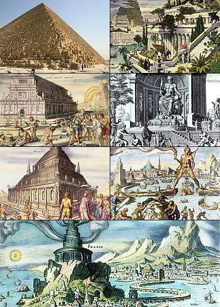

Septyni pasaulio stebuklai

- Pirmasis pasaulio stebuklas: Cheopso piramidė. Apie jį daugiau skaitykite čia.
- Antrasis pasaulio stebuklas: Kabantieji Babilono sodai. Apie jį daugiau skaitykite čia.
- Trečiasis pasaulio stebuklas: Artemidės šventykla Efese. Apie jį daugiau skaitykite čia.
- Ketvirtasis pasaulio stebuklas: Dzeuso skulptūra Olimpijoje. Apie jį daugiau skaitykite čia.
- Penktasis pasaulio stebuklas: Halikarnaso mauzoliejus. Apie jį daugiau skaitykite čia.
- Šeštasis pasaulio stebuklas: Rodo kolosas. Apie jį daugiau skaitykite čia.
- Septintasis pasaulio stebuklas: Aleksandrijos švyturys. Apie jį daugiau skaitykite čia.
© 2022 Matthew